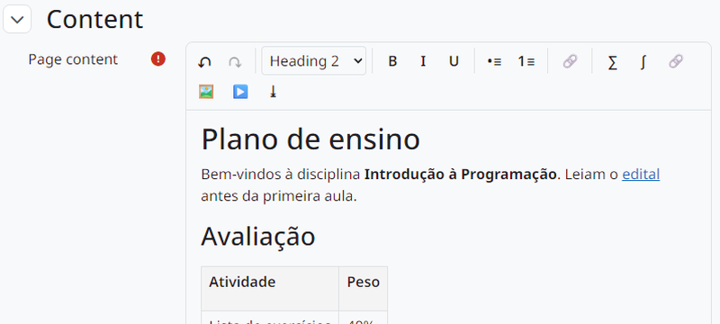
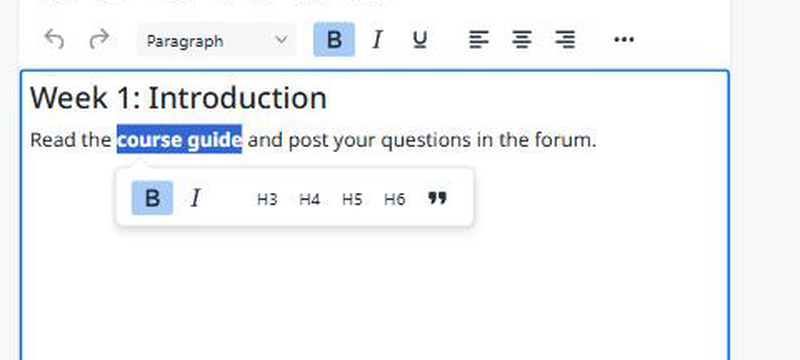
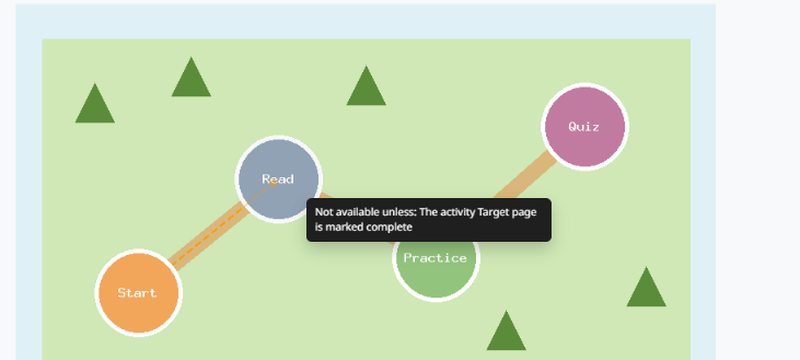
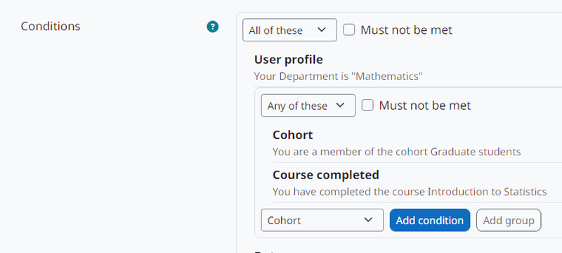
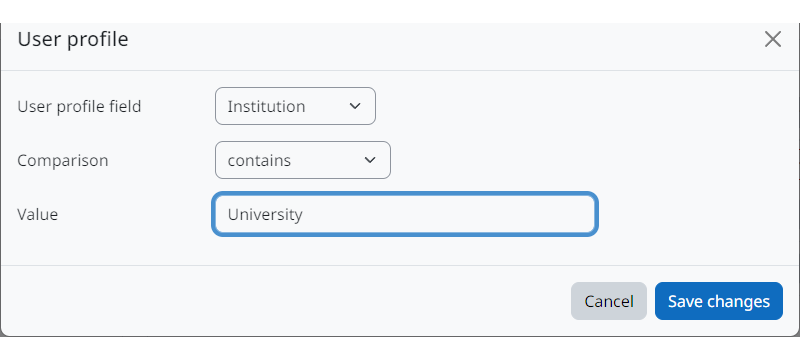
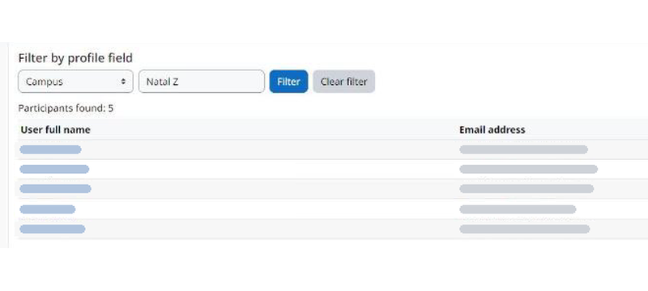

tiny_justify
Plugin for TinyMCE in Moodle (4.1+) that integrates text justification directly into the TinyMCE toolbar options.
A comprehensive library of open-source repositories designed to expand the Moodle ecosystem: WYSIWYG text editors, activity modules, course formats, conditional enrolment, administration tools and development infrastructure.
Extensions, text editors, activity modules, course formats, enrolment methods and administrative tools integrated into the Moodle LMS ecosystem.
Text editing plugins and utilities to enrich the content authoring experience across Moodle virtual courses, covering the TinyMCE and TipTap editors.
Plugin for TinyMCE in Moodle (4.1+) that integrates text justification directly into the TinyMCE toolbar options.

Modern WYSIWYG editor plugin for Moodle based on the headless TipTap library, offering a fast, clean, and modular editing experience.

TinyMCE plugin that replaces the toolbar and menus of every editor, with a visual builder fed by the editor's button registry.
Course format plugins designed to enrich instructional layouts, student engagement, and chronological navigation in virtual courses.
Social timeline course format for Moodle, organizing topics, weeks, and activities chronologically, visually, and engagingly.
Interactive pedagogical activity modules integrated into Moodle's course tracking and activity completion system.

Activity module for creating interactive image maps with clickable hotspots and conditional visibility based on activity completion.
Enrolment methods and the condition engine that decides who can enrol themselves in a course.

Self enrolment that depends on conditions you choose: dates, profile fields, cohorts, completed courses or username lists, combined with AND/OR/NOT. Can suspend or remove enrolments that stop meeting them.

Condition engine of Conditional self enrolment: enrolcond subplugins, condition tree with AND/OR/NOT and a hook for other plugins to add their own conditions.
Admin tool plugins for advanced participant filtering.

Admin tool plugin that adds a filter by custom user profile field to the course participants page (/user/index.php), respecting field visibility and separate groups.
Docker development environments, technical documentation theme, the customized mobile app and an agent skill for Moodle plugin development.
Docker Compose template and orchestration for rapid provisioning of local Moodle development environments with database and mailhog.
Official Sphinx theme for technical documentation of Moodle projects, inspired by Moodle Docs styling, with dark/light mode, responsive layout, and GitHub Pages automation.
Fork and customizations of the official Moodle mobile application built with Cordova, Ionic, and Angular for Android and iOS devices.
Agent Skill (Claude Code plugin) for building, reviewing, documenting and releasing Moodle plugins that pass the Moodle Marketplace review.